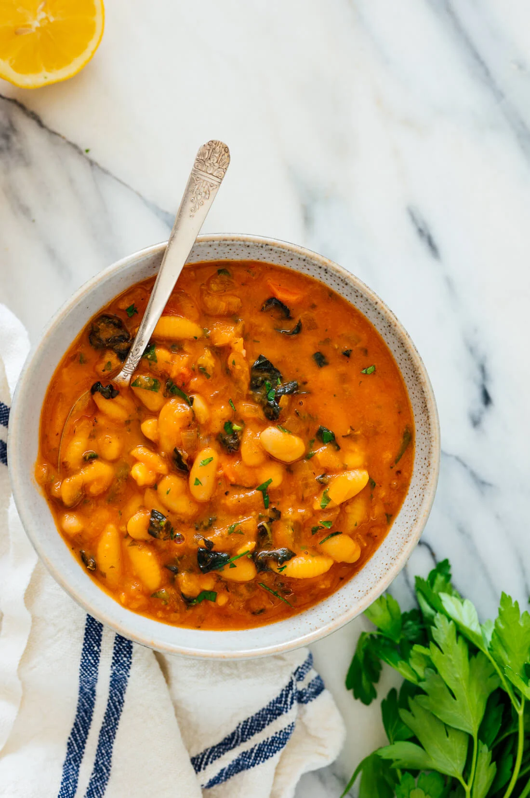

Pasta e Fagioli

Description
Pasta e fagioli translates to “pasta and beans.” Pasta and beans may not sound terribly enticing (unless you're me), but I assure you that this Italian stew is truly irresistible.
Ingredients
- 4 tablespoons extra-virgin olive oil, divided
- 1 medium-to-large yellow onion, finely chopped
- 2 carrots, scrubbed clean, finely chopped
- 2 ribs celery, finely chopped
- ¾ teaspoon fine sea salt, divided
- Freshly ground black pepper, to taste
- 4 cloves garlic, pressed or minced
- 1 can (15 ounces) crushed tomatoes*
- 4 cups vegetable broth
- 3 cups water
- 2 bay leaves
Steps
- First, we'll cook chopped onion, celery and carrot in olive oil until tender. We won't cook them long enough to form a true soffritto, but they form the backbone of flavor in this dish nonetheless.
- Then, we'll add garlic and cook just long enough to take the edge off (there's nothing worse than burnt garlic flavor, and it'll have plenty of time to continue cooking as we simmer the soup). Next, add crushed tomatoes and let them come to a healthy simmer—I'm convinced cooking canned tomatoes turns them from tinny to vibrant.
- We'll pour in one quart of vegetable broth and a few cups water. The water adds volume without additional sodium. We're cooking the pasta in the liquid, so we need plenty of it, but I'm getting ahead of myself. We'll season the soup with bay leaves, dried oregano, and red pepper flakes, and cook for ten minutes to bring it all together.
- I want to say that the blending step is optional (and if you don't have a blender, you can certainly skip it), but—this step is what produces the luscious, creamy-yet-cream-less texture you see here. All we do is scoop out some of the hot liquid and blend it with a portion of the beans. Pour it back in, and your soup has been transformed.
- Almost done! We'll add the remaining beans, plus the pasta, kale and parsley. We'll cook until the pasta and kale are tender.
- The final step, once we've removed the soup from the heat, is to add even more flavor with a tablespoon each of fresh lemon juice and olive oil. Taste it before and after (carefully!) and you'll understand what a difference this makes.